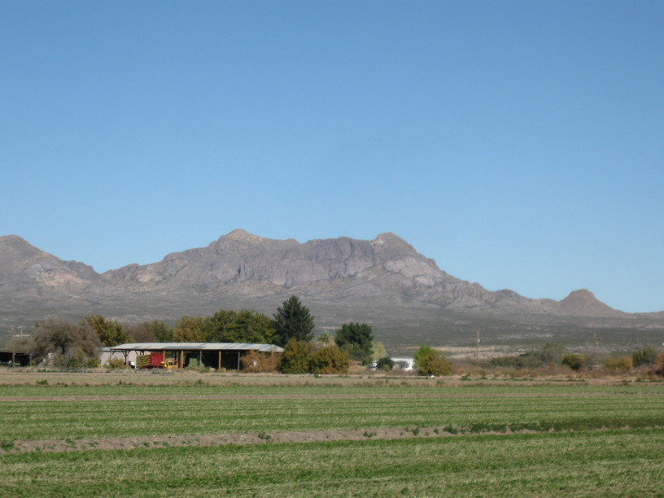
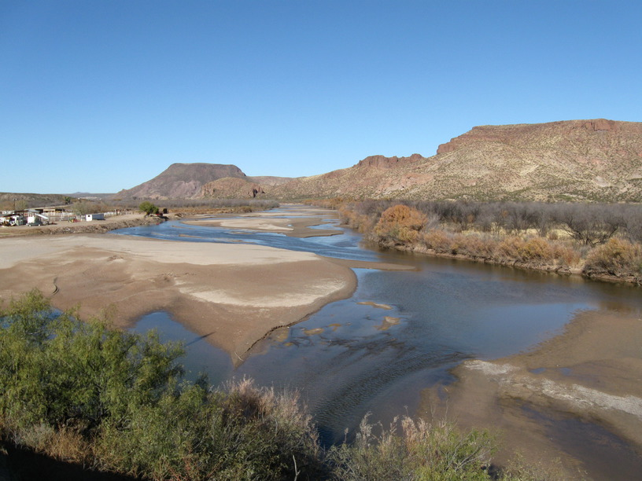
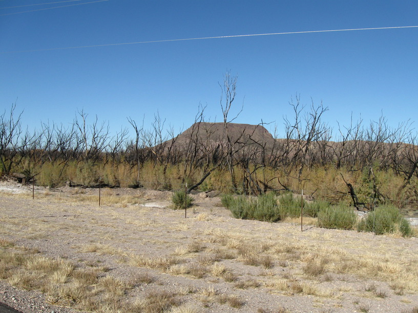
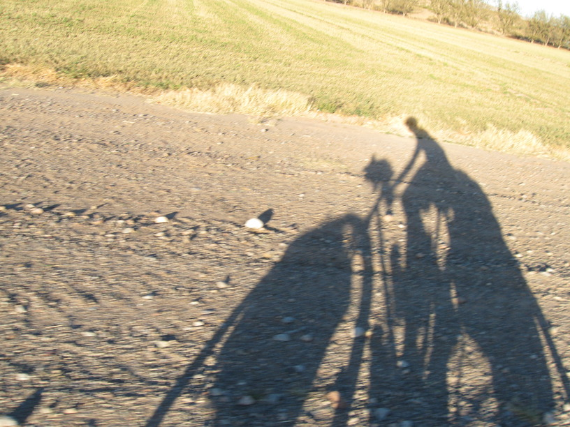
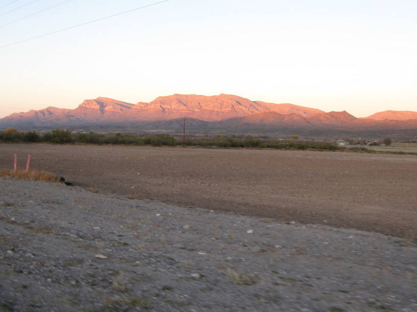
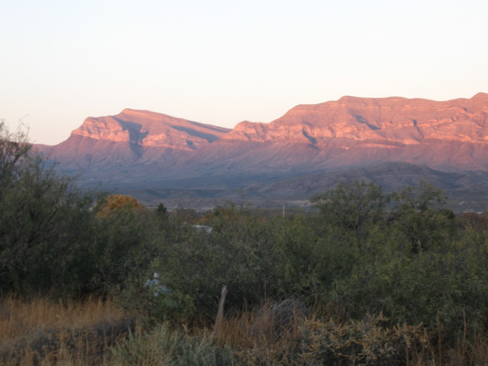

18 Nov 2008, Caballo, NM
It was pretty cold last night, so I'm writing this on the morning of the 19th.
I may have ridden 100 mi today. I wasn't following the ACA route exactly this morning, so I'll have to look at the GPS data to know for sure, but it was definitely 90+ miles.
My host, Roy, rode out with me this morning along with his friend George. George is on the board of an insurance company in UA! Pretty amazing, being all the way out here & finding a UA connection. They rode with me for the first 15 or so miles—they're training for the Tour of Tucson this weekend.
The rest of the day was very flat with a tailwind, so I was cruising around 15 mph. The tailwind was probably <10mph, but it was strong enough to help. So now I'm within 40 miles of the peak of Emory Pass, so I called Pat & told her to expect me a day early.
Excellent enchiladas in Las Cruces. They were out of chile rellenos, though :-(.
The stars out here are incredible.





